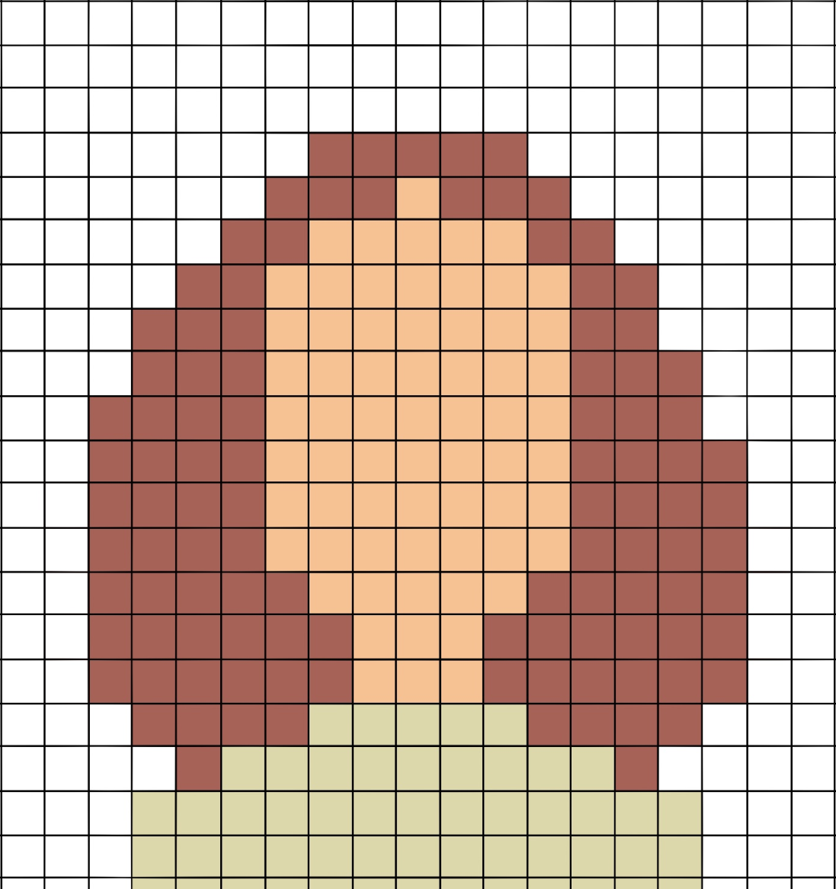

This will be our webtext's title on all pages
Home/Introduction
Classroom
Theory
Conclusion
References

Markdown Assistant
Project 1.0
Project 2.0
Reflection
Word-watching commentary
Words of Wisdom
Insightful gleanings
Hybrid Pedagogy
Project 2.0
Hybrid Pedagogy
Issue 1 (2019)
academic
art
article
assignment
class
classrooms
college
critical
disability
discussions
diversity
editing
education
english
experience
future
gender
graduate
help
hope
humanities
imagination
important
include
job
learning
life
participants
pedagogy
people
project
provide
public
publishing
read
research
school
semester
share
skills
students
studies
teachers
teaching
think
understand
wikipedia
women
work
writing
Hybrid Pedagogy
Issue 2 (2019)
academic
become
best
class
classroom
community
consider
content
course
create
critical
culture
discussion
education
engage
experience
faculty
help
information
institution
instructor
learning
links
making
materials
media
mooc
online
open
pedagogy
platforms
practices
questions
requires
school
shame
space
students
teachers
teaching
technology
template
think
voice
ways
web
websites
work
world
writing
Hybrid Pedagogy
Issue 3 (2019)
architecture
assignments
building
class
classroom
community
connections
context
course
critical
culture
designers
educator
english
experience
forms
help
ideas
instructional
interested
knowledge
language
learning
love
maker
making
online
open
pedagogical
pedagogy
personal
podcasting
practices
publishing
questions
rather
share
social
space
students
teachers
teaching
technology
think
university
violence
women
work
world
writing
Hybrid Pedagogy
Issue 4 (2019)
blogging
business
class
classroom
community
connect
content
conversation
course
create
critical
develop
different
discussion
education
end
freedom
going
grades
help
important
interesting
learning
open
pedagogy
people
personal
power
practice
public
questions
read
really
research
risk
science
start
students
talk
teachers
teaching
things
think
trust
university
values
vulnerable
work
writing
years
Hybrid Pedagogy
Issue 5 (2019)
academic
access
artifacts
assign
authors
books
class
classroom
collaborative
college
construction
contract
course
create
design
editing
education
environments
going
grade
help
instructional
kindness
learners
learning
materials
metaphor
online
particular
pedagogy
people
practice
process
projects
publishing
readings
required
students
syllabi
syllabus
teaching
technologies
textbook
texts
think
used
ways
work
writing
years